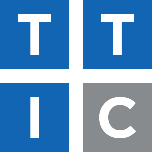
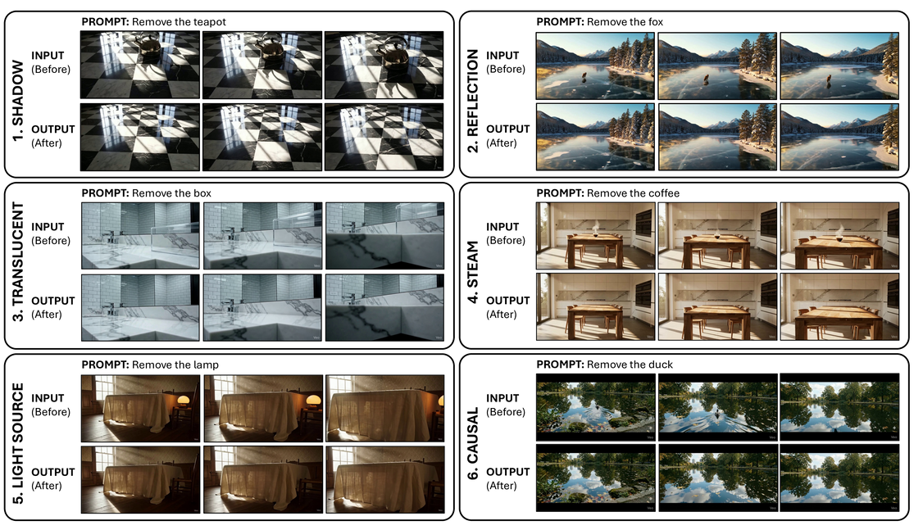
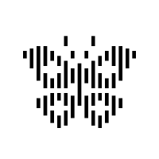

Toyota Technological Institute at Chicago
Ph.D. in Computer Sciences
Supervised by Yossi Gandelsman
I am an incoming PhD student in Computer Science at TTIC, where I will be supervised by Yossi Gandelsman. I am currently a research intern at Reve AI. Previously, I received my M.S. in Computer Engineering from Bilkent University, where I was supervised by Aysegul Dundar. My research focuses on vision-language models and interpreting the inner workings of deep neural networks. Previously, I worked on generative computer vision, with an emphasis on diffusion models for controllable video/image generation and editing.




Reve AI

Ph.D. in Computer Sciences
Supervised by Yossi Gandelsman
M.S. in Computer Engineering
Supervised by Aysegul Dundar · Departmental Scholarship
B.Sc. in Computer Engineering
Bilkent University
Best Teaching Assistant Award, 2025